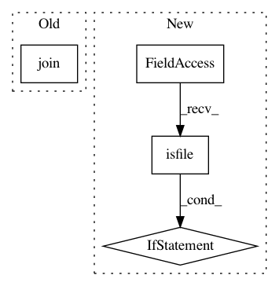

b90d0b505ac9ae8f51b85058635c063b896566f6,skimage/_build.py,,cython,#Any#Any#,14
Before Change
// If cython is not found, we do nothing -- the build will make use of
// the distributed .c files
print("Cython not found; falling back to pre-built %s" \
% " ".join([f.replace(".pyx.in", "c").replace(".pyx", ".c")
for f in pyx_files]))
else:
for pyxfile in [os.path.join(working_path, f) for f in pyx_files]:
After Change
// the distributed .c files if present
c_files = [f.replace(".pyx.in", ".c").replace(".pyx", ".c") for f in pyx_files]
for cfile in [os.path.join(working_path, f) for f in c_files]:
if not os.path.isfile(cfile):
raise RuntimeError("Cython >= 0.23 is required to build scikit-image from SCM checkout")
print("Cython >= 0.23 not found; falling back to pre-built %s" \
% " ".join(c_files))
else:
for pyxfile in [os.path.join(working_path, f) for f in pyx_files]:
In pattern: SUPERPATTERN
Frequency: 3
Non-data size: 4
Instances
Project Name: scikit-image/scikit-image
Commit Name: b90d0b505ac9ae8f51b85058635c063b896566f6
Time: 2016-04-06
Author: orion@cora.nwra.com
File Name: skimage/_build.py
Class Name:
Method Name: cython
Project Name: danforthcenter/plantcv
Commit Name: 934b0e505169c80fb0e068aa45add2277ee2b721
Time: 2016-04-25
Author: noahfahlgren@gmail.com
File Name: lib/plantcv/analyze_NIR_intensity.py
Class Name:
Method Name: analyze_NIR_intensity
Project Name: dhlab-epfl/dhSegment
Commit Name: a4217c8986523a59dd9b764467fc21b29dd572ba
Time: 2018-08-31
Author: sofia.oliveiraares@epfl.ch
File Name: train.py
Class Name:
Method Name: run